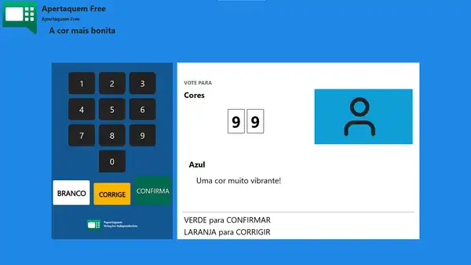
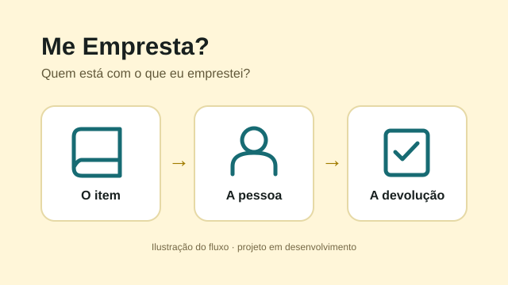

Cena ilustrativa

Disponível · Free e Premium
Apertaquem
Uma escolha coletiva pode começar com um computador.
Usar o Apertaquem ↗Ferramentas · projetos · formações
Sou Marcelo Santos. Crio ferramentas e projetos reunindo pesquisa, experiência profissional e diálogo com quem vai usar.

Educação, pesquisa e criação.
Pequenas criações. Novas possibilidades para o seu trabalho.

Uma escolha coletiva pode começar com um computador.
Usar o Apertaquem ↗Ajude a turma a perceber e regular coletivamente o volume do ambiente.
Experimentar o Som da Turma ↗Um espaço para crianças em alfabetização escreverem suas ideias. Escrita livre e receitas, sem correção automática.
Experimente com textos de exemplo, sem produções reais de estudantes nesta etapa.
Experimentar o ApertaLetra ↗
Saiba quem está com o que você emprestou, sem complicar o registro.
Use apenas dados fictícios. Os registros ficam no navegador, sem sincronização entre aparelhos.
Trocar experiências. Construir repertório. Levar novas ideias para a prática.
Experiência, pesquisa e invenção.
Sou Marcelo Santos, inventor, educador e pesquisador. Gosto de ouvir uma necessidade, imaginar uma resposta e colocá-la em prática com quem vai usá-la.
Minha trajetória conecta escola pública, gestão, formação de educadores, pesquisa e desenvolvimento de produtos. É desse encontro que nascem minhas criações.
Conhecer minha trajetória ↗Como uma maneira de fazer circula, ganha novos sentidos e se transforma quando outras pessoas a experimentam? No meu mestrado, investiguei interações no YouTube sobre Minecraft, na série Em Busca da Casa Automática, do canal Viniccius13.
O conceito proposto relaciona práticas, ideias, estilos e valores que são compartilhados e transformados nas interações. É uma contribuição construída nesse contexto de pesquisa, não uma promessa de que uma ferramenta, sozinha, produz aprendizagem.
Ler a dissertação no acervo da USP ↗Conhecer a proposta de formação em rede →Genealogia da aprendizagem prática: Interações no YouTube sobre Minecraft · ECA/USP, 2024. Orientação: Claudemir Edson Viana. A proposta de formação em rede é apresentada com seu estágio próprio, não como implantação concluída.Formações e projetos para sua escola ou rede.
Cursos, oficinas e palestras que podem ganhar uma nova edição ou ser adaptados ao contexto da sua instituição.
Conversar sobre uma formação ↗Desenho e análise de projetos em educação, a partir do contexto da instituição. Conheça a proposta de formação em rede e seu estágio de desenvolvimento.
Conhecer as propostas ↗Tem alguma coisa que facilitaria o trabalho na sua escola?
Conte sua ideia ↗Escuto o contexto e o que precisa mudar.
Definimos uma resposta inicial com escopo claro.
O uso real mostra o que ajuda e o que falta.
Melhoramos o que foi criado sem perder sua simplicidade.